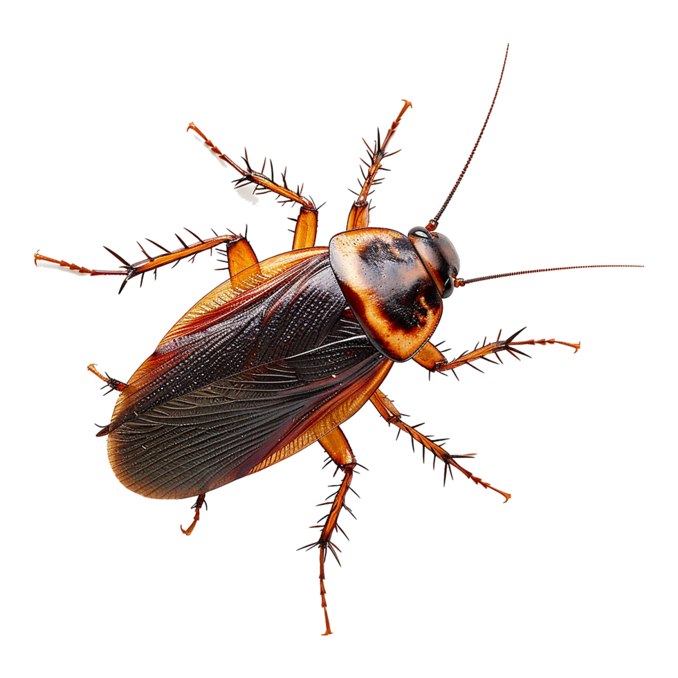

🦿 Robôs que passam por frestas
O corpo flexível e a capacidade de se comprimir inspiram robôs pequenos capazes de explorar espaços estreitos, inclusive em cenários de busca e resgate.
Descubra os segredos, as adaptações incríveis e a importância ecológica de um dos insetos mais resistentes do planeta.

🧬 300+ milhões de anos ⚡ Reflexos impressionantes ✦✧As baratas estão presentes em praticamente todos os ecossistemas do nosso planeta. Elas sobreviveram a milhões de anos de evolução e habitam desde florestas até centros urbanos.
Neste site vamos conhecer algumas das principais características das baratas e compreender como sua biologia explica sua incrível capacidade de sobrevivência.
A Entomologia é a área da Biologia que estuda os insetos, analisando sua anatomia, comportamento e ecologia.
No caso das baratas, o corpo é dividido em cabeça, tórax e abdômen, além de possuírem um exosqueleto resistente de quitina e antenas altamente sensíveis.
As baratas são insetos da ordem Blattodea, caracterizadas por corpos achatados que facilitam o esconderijo em frestas.
Podemos classificar as espécies de baratas em dois grupos principais de acordo com o habitat.
São espécies adaptadas ao convívio próximo com seres humanos.
Exemplos: Barata-americana (de esgoto) e Barata-germânica (de cozinha).
São insetos que vivem na natureza e não invadem residências.
Exemplos: Barata-da-madeira, baratas de folhada e espécies florestais.
As baratas apresentam características biológicas impressionantes que garantem sua alta resistência.
O exosqueleto flexível permite que suportem pressões gigantescas sem sofrer danos graves.
Elas conseguem se achatar para passar por frestas extremamente estreitas.
Seus cercos (estruturas na parte traseira) detectam mínimas correntes de ar do ambiente.
Isso permite que elas reajam e corram em milissegundos antes de qualquer ameaça.
A respiração ocorre por espiráculos nas laterais do corpo, e o sistema nervoso é segmentado.
Por isso, uma barata pode sobreviver por dias sem a cabeça, morrendo apenas por desidratação.
Quando a barata busca alimento, ela consome praticamente qualquer matéria orgânica disponível. Esse hábito é chamado de onivoria extrema.
Além de restos de comida, baratas podem se alimentar de cola de papelão, couro, sabão, restos de cabelos e até matéria em decomposição.
As baratas não possuem pulmões como os vertebrados. A respiração ocorre por meio de uma rede de tubos chamada sistema traqueal.
O ar entra por pequenos orifícios na lateral do corpo chamados espiráculos, levando oxigênio diretamente aos tecidos.
A fêmea deposita os ovos dentro de uma cápsula protetora e rígida chamada ooteca.
Das ootecas nascem as ninfas, que passam por ecdises (trocas de pele).
Ovo ➔ Ninfa ➔ Adulto
Trata-se de uma hemimetabolismo (metamorfose incompleta), onde a ninfa já se assemelha ao adulto, apenas sem asas desenvolvidas.
Elas suportam doses de radiação muito superiores aos humanos devido ao ciclo celular mais lento.
Elas não produzem veneno, mas transportam bactérias e fungos em suas patas ao andar por locais sujos.
Apesar da má fama, as baratas desempenham funções vitais no planeta.
A forma como as baratas se movimentam em terrenos acidentados inspira engenheiros na criação de microrrobôs para buscar sobreviventes em escombros de terremotos.
A natureza também funciona como laboratório de ideias para engenheiros e cientistas.
O estudo das baratas ajuda pesquisadores a entender como um corpo pequeno consegue se mover rapidamente, atravessar espaços estreitos e continuar andando em terrenos irregulares. Esses princípios inspiram projetos de robótica — não significa que toda tecnologia já esteja pronta para uso.
O corpo flexível e a capacidade de se comprimir inspiram robôs pequenos capazes de explorar espaços estreitos, inclusive em cenários de busca e resgate.
O modo como a barata percebe o ambiente ajuda a pensar em sensores e sistemas de navegação que reajam a obstáculos com rapidez.
O exoesqueleto e as pernas articuladas inspiram mecanismos leves, resistentes e adaptáveis a terrenos difíceis.
Pesquisadores da Universidade do Colorado estudaram a locomoção de baratas em espaços estreitos para desenvolver um robô inspirado nessa habilidade. Conheça a pesquisa (em inglês).
Se você pudesse copiar uma habilidade da barata para criar uma tecnologia que ajudasse pessoas, qual escolheria?
Escolha uma ideia para ver como ela poderia ajudar.
O impacto depende da espécie e do ambiente. Uma barata silvestre tem um papel diferente de uma espécie que infesta cozinhas e outros espaços humanos.
Importante: isso não significa que todas as espécies sejam pragas. Muitas vivem longe das casas e cumprem funções ecológicas importantes.
Um guia simples para prevenir infestações sem colocar pessoas, animais ou o ambiente em risco.
Não pegue a barata com as mãos. Se houver crianças ou animais por perto, mantenha-os afastados da área.
Feche embalagens, guarde a comida em recipientes e não deixe louça suja ou migalhas acumuladas.
Seque a pia, corrija vazamentos quando possível e evite deixar água parada durante a noite.
Verifique frestas, rodapés, ralos e passagens de tubulação. Use telas ou vedação adequada quando necessário.
Se houver sinais de infestação, procure um serviço profissional de controle de pragas e siga o rótulo de qualquer produto autorizado.
Nunca misture produtos de limpeza ou inseticidas. Não aplique produtos perto de alimentos, crianças ou animais; siga as instruções do rótulo e as orientações profissionais.
Marque o que você já fez. Seu progresso fica salvo neste navegador.
0 de 4 medidas concluídas.
Marque as ações que você pode colocar em prática. Sua lista fica salva neste navegador, sem precisar criar conta.
0 de 4 ações concluídas. Toda atitude consciente conta!
Fósseis indicam que as baratas já habitavam a Terra há mais de 300 milhões de anos, ou seja, elas já existiam muito antes do aparecimento dos dinossauros!
Detalhes, espécies e fases do ciclo de vida.


Imagens: American cockroach, Periplaneta americana e ooteca — Wikimedia Commons.
Uma barata consegue reagir a uma tentativa de chinelada em poucos milissegundos, mesmo quando a aproximação ocorre pelas suas costas.
Qual estrutura sensorial permite essa reação rápida ao vento provocado pelo movimento?
👤 Henrique
👤 Vinicius
👤 Gabriel
👤 Leonardo
👤 Janderson
Continue explorando, fazendo perguntas e aprendendo sobre a biodiversidade do nosso planeta.